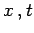
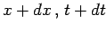
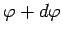
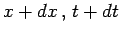
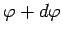

In Abhängigkeit davon, ob ein variabler Punkt P auf der Kurve in der expliziten (3.449), Parameter- (3.450) oder Polarkoordinaten-Form (3.451) gegeben ist, wird seine Position durch  oder  bestimmt. Mit N sei ein beliebig nahe bei P gelegener Punkt mit den Parameterwerten  oder  bezeichnet.
bestimmt. Mit N sei ein beliebig nahe bei P gelegener Punkt mit den Parameterwerten  oder  bezeichnet.